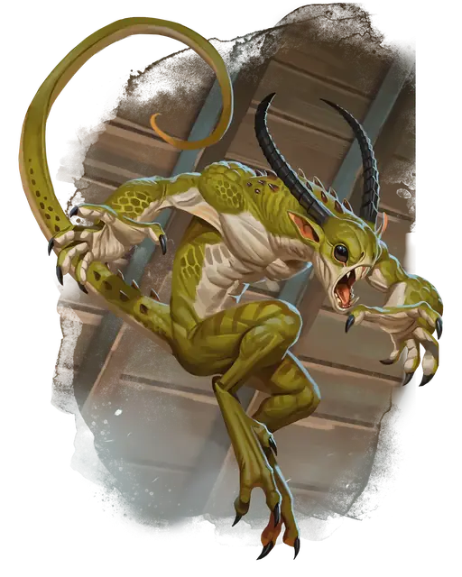

Квазит
Quasit
Крошечное Исчадие (Демон), Хаотичное Злое

Класс Защиты 13 Инициатива +3 (13)
Хиты 25 (10к4)
Скорость 40 футов
| мод | спас | ||
|---|---|---|---|
| СИЛ | 5 | −3 | −3 |
| ЛОВ | 17 | +3 | +3 |
| ТЕЛ | 10 | +0 | +0 |
| мод | спас | ||
|---|---|---|---|
| ИНТ | 7 | −2 | −2 |
| МДР | 10 | +0 | +0 |
| ХАР | 10 | +0 | +0 |
Сопротивление урону Огонь, Холод, Электричество
Иммунитеты Яд; Отравленный
Чувства Тёмное зрение 120 футов, пассивное Восприятие 10
Языки Общий, Бездны
Опасность 1 (200 опыта; БВ +2)
Особенности
Сопротивление магии. Квазит совершает с Преимуществом спасброски от заклинаний и прочих магических эффектов.
Действия
Раздирание. Бросок рукопашной атаки: +5, досягаемость 5 фт. Попадание: 5 (1к4 + 3) Рубящего урона, и цель становится Отравленной до начала следующего хода квазита.
Невидимость. Квазит сотворяет заклинание Невидимость на себя, не нуждаясь в компонентах (заклинательная характеристика — Харизма).
Испуг (1/день). Спасбросок Мудрости: Сл 10, одно существо в 20 футах. Провал: Цель становится Испуганной. Она повторяет этот спасбросок в конце каждого своего хода, оканчивая этот эффект при успехе. Спустя 1 минуту цель автоматически преуспевает.
Перевоплощение. Квазит либо перевоплощается в летучую мышь (Скорость 10 фт., Полёта 40 фт.), многоножку (Скорость 40 фт., Лазания 40 фт.) или жабу (Скорость 40 фт., Плавания 40 фт.), либо возвращается к своему истинному облику. Его статистика, кроме размера, не меняется в зависимости от формы. Снаряжение, которое он носит или несёт, не трансформируется.
Бонус мастерства +2
Среда обитания Бездна
Сокровища Отсутствуют